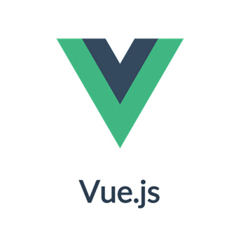
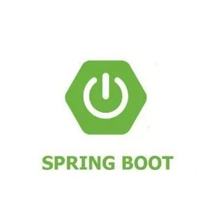
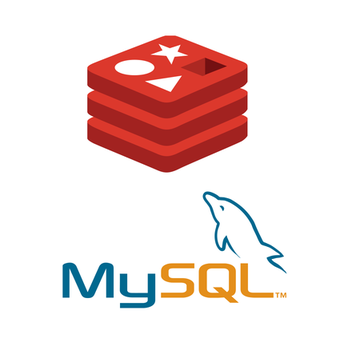
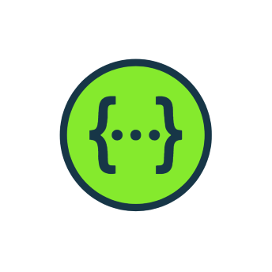

Vue.js 一个渐进式框架 作者：尤雨溪  开始项目选型的时候由于考虑到分布式架构， 于是就果断使用vue作为前端给框架。 其优点特别明显，第一搭建快。 再还有就是vue也是自己学的比较好的框架。 个人评价就是yyds。不用不知道，一用爽歪歪。 最后感谢尤爸的贡献，互联网有你们会变得更加强大...
SpringBoot 起飞的框架 作者：Pivotal团队  起初在使用SSM的时候繁杂的配置让我抓狂， 但庆幸的是我学会了怎么使用SpringBoot这像开挂的框架， SpringBoot秉承规则大于配置的理念让我们使用极少的配置就可搭建一个优秀的项目框架。 好了这就是我为什么用它来写后台了,使用SpringBoot集成了各种优秀框架， 使得我在很短的时间内，就将后台接口开发完成。 最后还是有感谢一下，这些阿谀奉承的开发者。
redis和mysql 数据库 作者:Salvatore AB公司  为什么要选俩个数据库呢？装逼吗？ 当然不是让你们知道我只会mysql岂不是很面子， 所以肯定不是啊。 mysql用来存的的班级信息级图片信息， redis用来做缓存很好， 当时是我仅仅使用了redis数据过期自动清除的机制。 当然是用来做验证码服务了。用redis做验证码的缓存， 生成的验证码一分钟自动过期。简直ok爆了。 redis可以用来做数据统计。反正就很nb...
Nginx 轻量级的Web服务器 作者：Igor Sysoev 同志们我不允许还有人不知道Nginx， 它真的很好用啊，哦买噶， 用它用它！！！刚开始的时候我都要裂开了， 一台服务器只有一个域名，而且DNS解析还被限制。 在我正是低迷的时候Nginx出现了，我的妈呀，这是什么神仙服务器。 它可以把我从DNS解析的域名精准的打到我的后台项目上。 最重要的是它还解决了https请求http的不同源问题。 tmd太好用了，真是再生父母啊...
Swagger 接口可视化框架 作者：Bootstrap团队  这个工具想必大家都用过， 它可以自动吧你写的接口转换在线成接口文档。 正真做到边开发边测试。主要你可以解放双手， 妈妈再也不用担心我不会写接口文档了。 如果你还在为怎么写接口文档、 接口文档耗时耗力而烦恼。来吧我推荐你使用swagger2. 解放你的双手你只差一个swagger2...
阿里云 云服务器平台 作者：阿里巴巴 实不相瞒阿里云是目前做的最好的云服务器平台。 服务器很稳定，服务也很到位。 起初没有云服务器的时候所有的项目都跑在本地， 属实然我不好装逼。 装逼归装逼，没有阿里云想必你也看不到我的项目。 云服务器是将来的大势所趋。 可以说云服务器的诞生让互联网的发展迈出了一大步。 最后感谢在项目中用到的所有技术。有你们的贡献我很幸运， 更庆新能成为一名开发者...